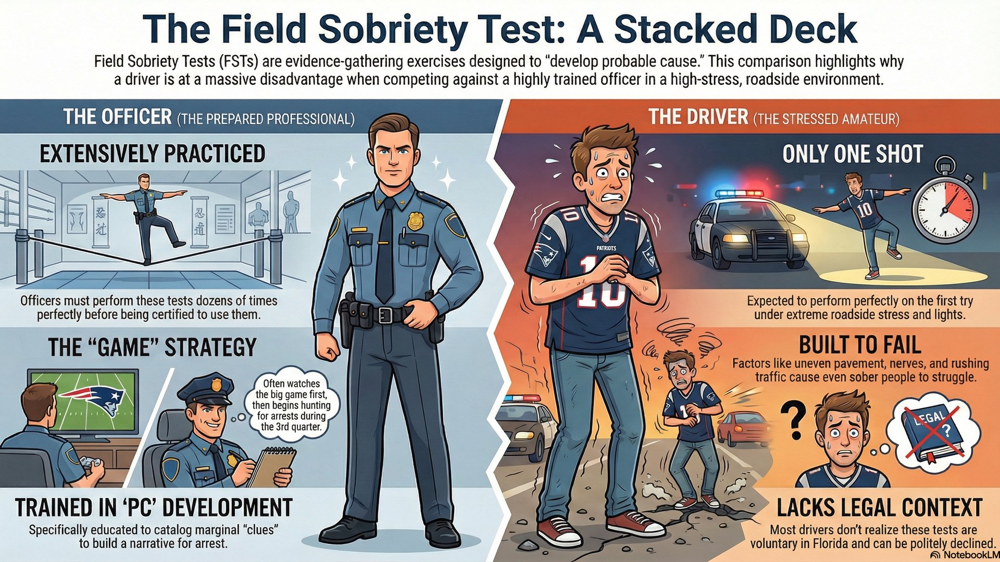

Super Bowl Sunday: When Officers Hunt for Probable Cause

Every Super Bowl Sunday, individual officers across Orlando and Central Florida make their own decisions about when and where to patrol. From the 3rd quarter onwards, officers start actively hunting for reasons to make arrests. As a former State Trooper, I can tell you exactly what happens: officers are trained to "develop" probable cause—and they want to take people to jail. Here's what you need to know to protect yourself this Sunday.
Why the 3rd Quarter Changes Everything
Here's what most people don't realize: individual officers have autonomy over when and where they patrol. There's no official agency policy that says "deploy at kickoff." The reality is simpler—and more strategic. Officers want to watch the game too.
When I worked during big games and sporting events as a State Trooper, I'd watch the game or listen to it on my radio. Then, around the 3rd quarter, I'd start hunting. Why the 3rd quarter?
- Alcohol absorption timing: People who started drinking at kickoff are now approaching peak BAC levels (2-3 hours of drinking)
- Early departures: Fans start leaving parties and bars during the 3rd and 4th quarters to "beat traffic"—these are your prime targets
- Fresh targets on the road: Cars leaving watch parties become visible on residential streets and main roads
- Officers want the arrest AND the game: You can watch most of the game, then make your DUI arrest during the 4th quarter or right after—best of both worlds
I'd actively look for cars leaving residential areas (house parties), bar parking lots, or entertainment districts. Then I'd watch for any minor traffic violation to justify the stop: touching the lane marker, driving slightly under the speed limit, broken taillight, anything. That's the pretext. Once the stop is made, I'd start looking for signs of impairment to develop probable cause for a DUI arrest.
The Two Crimes That Spike on Super Bowl Sunday
Super Bowl Sunday sees a natural increase in two specific charge types—not because officers are "focused" on them, but because these are the crimes that happen when people drink and watch emotional sporting events:
- DUI (F.S. 316.193): Driving under the influence of alcohol or controlled substances. People leave parties and bars during the 3rd and 4th quarters, creating a surge of potentially impaired drivers on the road.
- Domestic Violence Battery (F.S. 784.03): Arguments over the game, money lost on bets, or alcohol-fueled disputes escalate into physical altercations. Florida's mandatory arrest law means officers must arrest someone if they observe signs of injury or mutual combat.
Both charge types carry serious consequences: DUI can result in license suspension, ignition interlock devices, and increased insurance rates. Domestic violence battery triggers a "no contact" order, firearm restrictions, and can affect employment in healthcare, education, or government jobs.
How Officers Are Trained to "Develop" Probable Cause
Here's the uncomfortable truth: officers are trained to look for reasons to arrest you, not reasons to let you go. This isn't speculation—there's an entire section in the police academy manual on "developing probable cause." During Super Bowl enforcement, this training goes into overdrive. Let me explain what "developing probable cause" actually means from a law enforcement perspective.
From the Florida Law Enforcement Academy Manual
Developing Probable Cause
"To establish probable cause, officers must be able to point to certain circumstances leading them to believe that a suspect committed a crime. The difference between reasonable suspicion and probable cause is the amount and quality of information the officer has concerning the commission of a crime by a particular suspect, or that evidence of a crime is present in a place to be searched."
"Illinois v. Gates also established the totality of circumstances standard of probable cause. This is the standard for all arrests and warrants. You must focus on all the circumstances of a particular case rather than one factor when determining probable cause for an arrest. Your knowledge, training, and experience will assist you with evaluating the totality of the circumstances."
Source: 2024 Florida Law Enforcement Academy, Law Enforcement Volume 1, Chapter 3: Legal, Unit 2: Legal Concepts, Lesson 2: Standards of Legal Justification
Translation: Officers are explicitly taught to build a case by accumulating observations and circumstances. Each "clue" (odor of alcohol, bloodshot eyes, fumbling for license, weaving within lane) adds to the "totality of circumstances" until the officer believes they have enough to arrest. This is why I said earlier: by the time you're out of the car doing field sobriety tests, the officer already has probable cause from the driving + the odor.
1. The Pretextual Stop (Getting You Pulled Over)
Officers need reasonable suspicion of a traffic violation to initiate a stop. On Super Bowl Sunday, we actively look for any minor infraction to justify pulling you over. Common pretexts I used:
- "Weaving within the lane": You don't have to cross the line—simply drifting left or right within your lane is enough. I'd follow a car for a mile just waiting for one weave.
- "Driving too slowly": Going 5-10 mph under the speed limit can be documented as "driving in a manner consistent with impairment" (we're trained to say you're trying to avoid attention)
- Equipment violations: Broken taillight, tag light out, expired registration, cracked windshield—all legitimate legal reasons to stop you
- "Failure to maintain single lane": Touching the lane marker once is enough, even if you immediately correct. This is the most common pretext in DUI stops.
- Following too closely: Subjective, but if I'm behind you and you're tailgating someone, that's my pretext
The traffic violation is just the excuse to get you stopped. Once you're on the side of the road, the officer's real objective begins: develop probable cause for impairment.
2. The "Clues" Officers Document
Officers are trained to catalog specific "impairment indicators" in their reports. These observations, even if marginal, build the probable cause narrative:
- Odor of alcohol: "I detected a moderate odor of an alcoholic beverage emanating from the defendant's breath"
- Bloodshot/glassy eyes: Can be caused by fatigue, allergies, or contact lenses—but officers document it as impairment
- Slurred speech: Nervous speech, regional accents, or speech impediments get labeled as "slurred"
- Fumbling with documents: Nervously searching for your license? That's "inability to locate documents" in the report
- Admission of drinking: "I had two beers" becomes "defendant admitted to consuming alcoholic beverages prior to driving"
They Want to Take You to Jail
During Super Bowl enforcement, officers are incentivized to make arrests. Grant funding depends on arrest numbers. Command staff track officer productivity. Media coverage highlights "X drunk drivers taken off the road." Supervisors review dashcam footage to ensure officers didn't "let anyone go" who should have been arrested. This creates immense pressure to arrest first and let the courts sort it out later.
3. Field Sobriety Tests: Built to Fail (And Why You Already Lost)
If the officer suspects impairment, you'll be asked to perform field sobriety tests. Here's what they don't tell you: these tests aren't pass/fail—they're evidence gathering exercises. And here's the kicker: the officer already has probable cause to arrest you before you even step out of the car.
Let me explain the legal standards:
- Reasonable Articulable Suspicion (RAS) for the stop: Very low standard—think 25% or less on a certainty scale. Weaving once is enough.
- Probable cause for arrest: Not much higher—maybe 30-40%. Here's the critical part: courts have ruled that the odor of alcohol plus bad driving alone constitute sufficient probable cause for a DUI arrest.
Think about that. By the time the officer walks up to your window and smells alcohol on your breath, he already has probable cause to arrest you based on your driving + the odor. The field sobriety tests aren't to determine if you'll be arrested—they're to gather more evidence to use against you in court.
Here's the unfair part: the officer practiced these sobriety tests dozens of times before doing them correctly and being signed off with a passing score. I had to perform field sobriety tests repeatedly during academy training until I got certified. You're getting your one shot roadside under extreme stress—nighttime, traffic rushing by, officer standing over you, knowing you're about to be arrested. The deck is stacked against you.
Why Field Sobriety Tests ONLY Harm You
Even if you "pass" the field sobriety tests, the officer still has probable cause to arrest you. The tests don't exonerate you—they only provide additional evidence of impairment. Here's the reality:
- Best case scenario: You perform perfectly on the tests. The officer arrests you anyway because odor + driving = probable cause. Your "perfect" performance doesn't help you in court—prosecutors will just focus on the BAC reading instead.
- Worst case scenario: You struggle with the tests (like most sober people would on the side of the road at night). Now the officer has additional evidence of impairment to document in his report and testify about in court.
- There is no scenario where field sobriety tests help you. They're voluntary for a reason—officers want your consent to gather more evidence against you.
The three standardized field sobriety tests (SFSTs):
- Horizontal Gaze Nystagmus (HGN): Officer moves a pen in front of your eyes looking for involuntary jerking. Completely subjective—no video can verify what the officer claims to have seen.
- Walk-and-Turn: 9 steps heel-to-toe down an imaginary line, turn, 9 steps back. Officers count "clues" like stepping off the line, raising arms for balance, or taking the wrong number of steps. Most sober people fail this test on uneven pavement at 2 AM.
- One-Leg Stand: Stand on one foot for 30 seconds while counting. Swaying, hopping, or putting your foot down are "clues." Again, most sober people struggle with this, especially on the side of the road with traffic rushing by.
Critical point: Field sobriety tests are voluntary in Florida. You can politely decline without penalty. Officers won't tell you this—they'll frame it as a request ("Can you step out and perform some tests for me?") that implies you must comply. Decline politely. The officer will arrest you anyway—but now he has less evidence to use against you in court.
Your Constitutional Rights: What the Law Actually Says
Super Bowl enforcement operates under the same constitutional framework as any other DUI stop. Here's what you need to know:
1. DUI Checkpoints (Still Legal, But Rarely Used)
The U.S. Supreme Court ruled in Michigan Dept. of State Police v. Sitz (1990) that DUI checkpoints are constitutional under the Fourth Amendment. However, checkpoints are not common anymore in Central Florida. They're still legal, but they're not effective and most DUI arrests come from pretextual traffic stops (see above—officers hunting for weaving, equipment violations, etc.).
If you do encounter a checkpoint, know that they must follow strict guidelines:
- Advance notice required: Law enforcement must publicly announce checkpoint locations in advance
- Neutral selection criteria: Officers can't cherry-pick vehicles based on race, age, or vehicle type (e.g., "every third car")
- Supervisory oversight: A supervisor must determine checkpoint location and duration (not individual officers)
- Minimal intrusion: Stops should be brief (20-30 seconds) unless officers observe signs of impairment
Bottom line: You're far more likely to be stopped by an individual officer who observed (or claims to have observed) a traffic violation than you are to encounter a formal DUI checkpoint on Super Bowl Sunday.
2. Pretextual Traffic Stops (The Real Threat)
This is how most DUI arrests happen—not at checkpoints, but during pretextual traffic stops. Officers need reasonable suspicion of a traffic violation to stop you. Common Super Bowl Sunday pretexts include:
- Weaving within your lane (even if not crossing the line)
- Driving too slowly or erratically
- Equipment violations (broken taillight, expired tag)
- Any traffic violation (speeding, stop sign, etc.)
3. Implied Consent Law (F.S. 316.1932)
Florida's implied consent law means that by driving in Florida, you've already consented to breath, blood, or urine testing if lawfully arrested for DUI. Refusing carries steep penalties:
- Refusal is now a criminal offense in Florida (not just administrative penalties)
- First refusal: 1-year license suspension + criminal charge
- Second refusal: 18-month suspension + first-degree misdemeanor charge
- Refusal can be used against you in court as "consciousness of guilt"
- You do NOT have the right to speak to an attorney before deciding whether to submit to testing
Critical Update: Refusal Is Criminal
Unlike field sobriety tests (which you should decline), refusing the breath test in Florida is a separate criminal offense. You face both the DUI charge AND a refusal charge. This is why, once arrested, most defense attorneys recommend submitting to the breath test—at least you limit the charges to just DUI, and breath test results can be challenged on technical grounds (calibration, observation period, machine error).
Field Sobriety Tests Are Optional
Unlike breath tests (which carry refusal penalties), field sobriety tests are voluntary in Florida. You can politely decline roadside exercises like the walk-and-turn, one-leg stand, or horizontal gaze nystagmus test. Refusal cannot be used against you in court and carries no penalty. However, officers may still arrest you based on other observations (odor of alcohol, slurred speech, bloodshot eyes).
What to Do This Super Bowl Sunday
Based on last year's data and constitutional law, here's your game plan for Super Bowl Sunday 2026:
Before the Game
- Designate a sober driver or use rideshare (Uber/Lyft surge pricing is cheaper than a DUI)
- Check checkpoint locations: Orlando Police and OCSO typically announce Super Bowl checkpoint locations 24-48 hours in advance
- Know your limits: Even one drink can impair reaction time; two drinks in an hour can approach 0.08 BAC for many people
- Save this number: 407-500-7000 (Lotter Law 24/7 DUI defense line)
During a Traffic Stop
- Be polite and cooperative (officers document demeanor in reports)
- Provide license, registration, and insurance (required by law)
- Decline field sobriety tests politely ("I'd prefer not to, officer")
- Do not answer questions beyond identifying information ("How much have you had to drink?" → "I'd like to speak to my attorney")
- If arrested, comply with breath test (refusal penalties are severe)
After an Arrest
- Request an attorney immediately: "I want to speak to my lawyer before answering questions"
- Do not discuss your case with cellmates, jail staff, or anyone except your attorney
- Request a formal DMV hearing within 10 days to challenge your license suspension
- Document everything you remember: What you drank, when you drank it, food consumed, medications taken, observations about the officer's conduct
Why Super Bowl Sunday = Maximum Enforcement (The System View)
Understanding the "system view" helps you grasp why Super Bowl Sunday sees increased DUI arrests:
1. Grant Funding and Political Pressure
High-visibility enforcement operations receive federal grant money (NHTSA "Drive Sober or Get Pulled Over" campaigns) and generate positive media coverage. Chiefs and sheriffs can point to arrest numbers as evidence of proactive public safety measures.
2. Individual Officers, Same Goal
While there's no coordinated multi-agency operation on Super Bowl Sunday, individual officers across multiple agencies are all doing the same thing: watching the game, then hunting for DUI arrests starting in the 3rd quarter. This means:
- Multiple jurisdictions patrolling simultaneously: Orlando PD, Orange County Sheriff, Florida Highway Patrol, and municipal police are all out there independently
- More officers on the road: Extra shifts and overtime are common on Super Bowl Sunday (agencies know it's a high-arrest night)
- Same tactics, different badges: Every officer is trained the same way—look for pretextual stops, develop probable cause, make the arrest
3. Prosecution Patterns
The State Attorney's Office knows which cases came from high-profile enforcement operations. This can affect plea negotiations:
- Political sensitivity: Prosecutors may be less willing to dismiss Super Bowl DUI cases due to media attention
- Officer credibility: Task force officers are often veteran DUI investigators with strong courtroom records
- Evidence quality: Super Bowl arrests often include dashcam video, body cam footage, and meticulous reports (officers know these cases get scrutiny)
The Hardline Prosecution Approach
Super Bowl enforcement cases are notoriously difficult to get dismissed. Prosecutors are under political pressure to "send a message" about drunk driving during high-profile events. Typical DUI dismissal rates in Orlando range from 5-15%, but during Super Bowl prosecutions, that rate drops significantly. This means negotiated outcomes (withhold of adjudication, reduced charges, diversion programs) become the most realistic goals—making experienced legal representation even more critical.
How a Criminal Defense Attorney Can Help
If you're facing DUI or criminal charges from Super Bowl Sunday enforcement, an experienced defense attorney can challenge the arrest on multiple fronts. As a former State Trooper and Deputy Sheriff, I understand how law enforcement builds these cases—and how to dismantle them.
Here's what a defense attorney will investigate:
- Checkpoint legality: Did law enforcement follow proper checkpoint procedures (advance notice, neutral selection, supervisory oversight)?
- Probable cause for stop: If stopped outside a checkpoint, did the officer have reasonable suspicion you violated a traffic law?
- Field sobriety test administration: Were tests conducted on level ground, with proper lighting, and according to NHTSA standardized protocols?
- Breath test reliability: Was the Intoxilyzer 8000 properly calibrated? Did the officer observe you for 20 minutes before testing? Were you read implied consent warnings correctly?
- Rising BAC defense: If your BAC was marginal (0.08-0.10), your BAC may have been below 0.08 while driving but rose by the time you were tested 30-60 minutes later
- Margin of error: Breath test machines have a ±0.01 margin of error; a reading of 0.08 could be 0.07 (legal)
Experience shows that representation matters significantly in Super Bowl enforcement cases. The combination of political pressure, media attention, and coordinated multi-agency operations creates a challenging environment for defendants—but an experienced defense attorney who understands law enforcement tactics can level the playing field.
Arrested During Super Bowl Enforcement?
Time is critical in DUI cases. You have only 10 days from arrest to request a formal DMV hearing to challenge your license suspension. Don't wait—call now for a free case review.
Contact Lotter Law at 407-500-7000 for a free consultation. Former law enforcement. Aggressive defense. Available 24/7.

Jeff Lotter
Criminal Defense Attorney | Former State Trooper
Jeff Lotter is an Orlando criminal defense attorney and former Florida Highway Patrol trooper. He uses his law enforcement background to build stronger defenses for clients facing DUI and criminal charges in Central Florida.